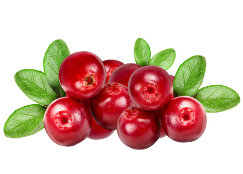

크랜베리(CRANBERRY)
과일의 일종. 북아메리카 원산으로 진달래목 진달래과 산앵두나무속 넌출월귤아속 넌출월귤나무(크랜베리나무)의 열매이다.크랜베리의 특징
한국어로는 넌출월귤이라고도 하지만 이것이 현재 대한민국 지역에서는 상업적 생산량이 제로인 관계로, 보통 영어명인 크랜베리로 알려져 있다. 오래된 요리책이나 번역 소설 등을 보면 넌출월귤이라고 되어 있는 경우가 많다. 대한민국에서는 보기 힘들지만 북극권으로 갈수록 흔하며 북한 백두산에서도 자생한다. 북한은 넌출월귤을 천연기념물로 지정해서 보호하고 있다.열매가 달릴 때 가지 모양이 학(crane)을 닮았다 하여 크랜베리라는 이름이 붙었다. berry라는 말이 붙었으나 그냥 열매라는 뜻으로 딸기류와는 전혀 관련이 없다. 장미과에 속하는 딸기류와 달리 진달래과에 속하며 같은 진달래과에 속하는 과일로 블루베리가 있다.
신맛이 강하고 약간의 쓴맛과 단맛이 있는 열매로서 오래 전부터 북미 원주민들에 의해 식용되었고 17세기에 유럽으로 전래되었다. 미국 원주민들은 이 열매를 그냥 먹거나 말려서 페미컨을 비롯한 여러 가지 음식에 사용하였다. 유럽에 전래된 이후 제과, 제빵 등에 활용되었고 크랜베리를 이용한 음료도 선보이게 되었다.
현대에 들어서는 주스, 잼, 말린 크랜베리로 유통되며 보통 말린 크랜베리를 많이 접할 수 있다. 말린 크랜베리는 다양한 제과, 제빵에 쓰이며 미국과 캐나다의 추수감사절과 크리스마스 만찬에 필수적인 요소이기도 하다.

(크랜베리 이미지)
(크랜베리 이미지)
크랜베리의 효능
1. 요로 감염에 대응합니다.2. 위암과 위궤양에 대응합니다.
3. 소염 성분이 있습니다.
4. 심혈관 질환에 좋습니다.
5. 면역력을 높입니다.
6. 소화를 돕습니다.
7. 피부 건강에 좋습니다.
8. 구강 건강에 좋습니다.